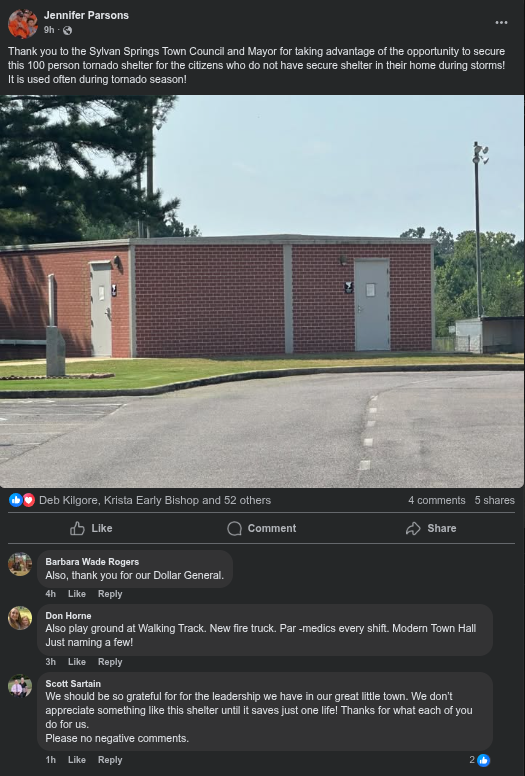

CRIME/MYTH: Vandalism of Campaign Signs/Dollar General in trouble?
This brings us no pleasure, and our Sylvan Springs neighbors need to learn right from wrong. Win the right way.
Sources: Aaron Wheeler, Dean at Dollar General, and....
Video. No, it was not edited (you know who you are) - we were just too miffed to edit ths one. This article was written quickly.
Original Story: Sunday, August 3, 2025
In the What's Happening in Sylvan Springs? Facebook group, the civil war rages on, inclusive of unlawful threats of violence directed toward us and other individuals, while the admin seems to be only deleting the comment, not banning the offender. There are 3 admins: Terri Stephens, Bonnie Gann Frye, and Amy Shaddix. Of the three, the mother of Amy Shaddix, former town clerk, Peggy Shaddix, twice former town clerk, seems to be in full support of the Stev Parsons campaign. This represents a challenge, because we were invited by an admin, and yet we are still shadowbanned, post approval required. One of our previous stories still has yet to be posted. This demonstrates the great divide in this town.
Two days ago, we had a discussion with mayoral candidate Aaron Wheeler (R), regarding signs disappearing at Dollar General. As we came to find out, the manager of Dollar General was allegedly told that Aaron did not support Sylvan Springs having a Dollar General. We investigated this rumor, by talking to Aaron about it, who was a bit confused by the statement. Aaron informed us that he hasn't said that he's against Dollar General, and in our discussion it was acknowledged that not having that store would mean less convenience for Sylvan Springs residents and less tax revenue for the town - which we really need. Aaron told us he was also trying to figure out what happened/who said this.
Yesterday, we talked to Dean ourselves without Aaron. Dean is General Manager of the Dollar General in Sylvan Springs, and we asked him if it's true that someone told him this, and asked if he could share where that came from. Dean answered, that he is unwilling to identify "him." This is suspect, because on our mayor's wife, Jennifer Parsons' Facebook, thanking Stev for the tornado shelter (paid by grant/taxpayer funding), there is a post where an individual was thanking Stev for the Dollar General. We thought this strange with the timing of this incident, and the spreading of what appears to be a false rumor being spread from the Dollar General all of a sudden. It sounds like small-town underhanded mud-slinging.

Aaron did tell us earlier, that he desired to discuss this and be able to talk with those who think he's against a Sylvan Springs business that most would agree has benefited the town, so that he could right any wrongs that may have happened.
Didn't your mother tell you vandalism isn't right?
On our way back this morning, we noticed a flattened campaign sign, ran over. This is reminiscent of the Donald Trump signs that people would steal, vandalize, and run over. So far, we've even had people threaten violence against us, before an admin quickly deleted it, instead of banning the individual (the only right response).
We want to be clear. This is wrong, and we don't care who you are. Who did it? It may have been a member of What's Happening in Sylvan Springs? (not the 2.0 version), based on the previous discussions we have seen. We're pretty sure both candidates would denounce vandalism or theft of campaign signs, but we aren't so sure about our neighbors anymore now.
A short video, Stev Parsons campaign sign, as proof.
This isn't The Babylon Bee. We have never seen a town's citizens so passionately arguing to LOSE their Constitutional rights to discussion/speech, and to vote for their government officials, as much as Sylvan Springs. We thought Sylvan Springs citizens were better than this, but we keep getting proven wrong.